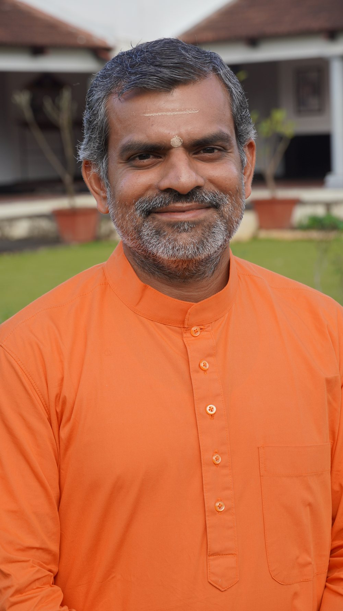
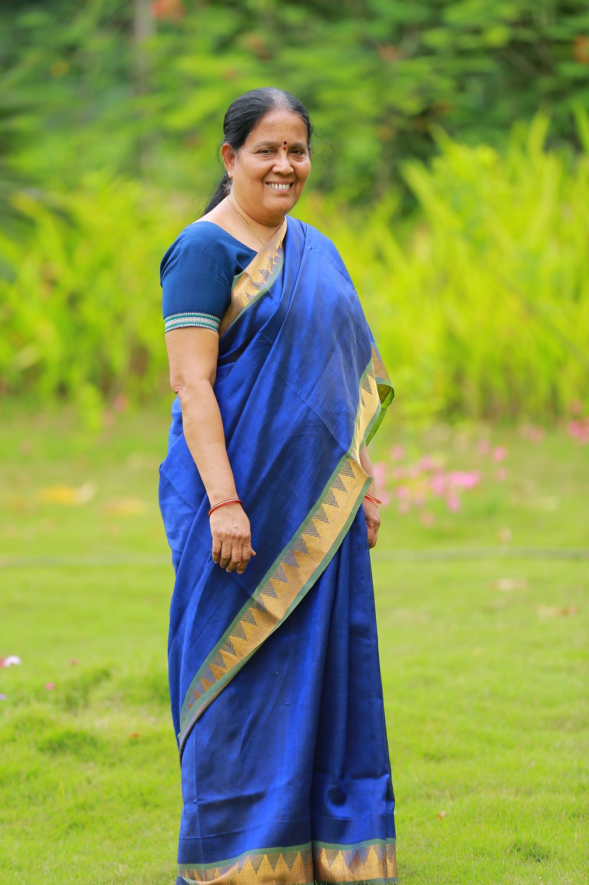
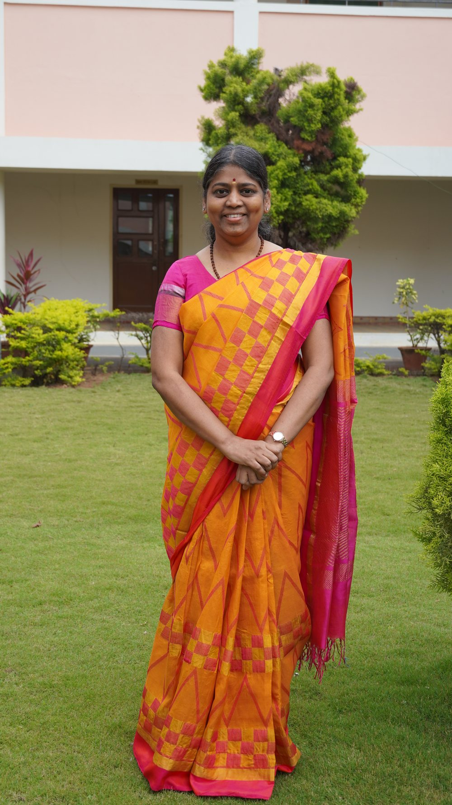
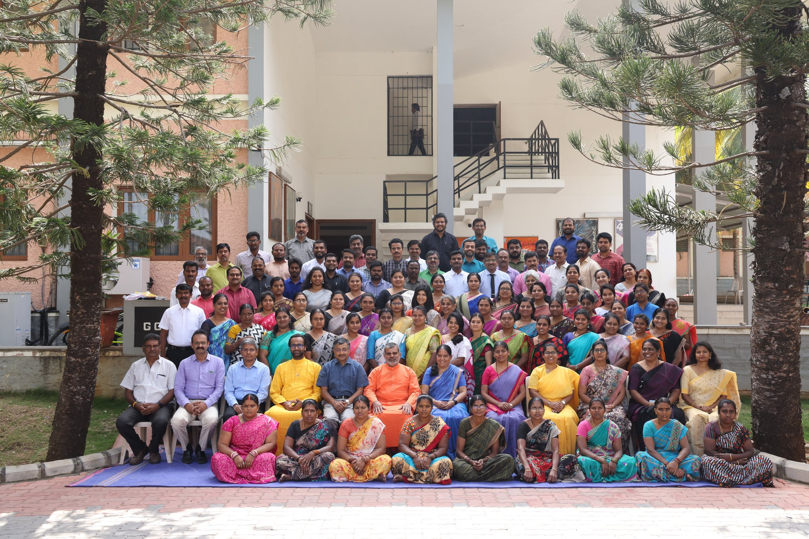
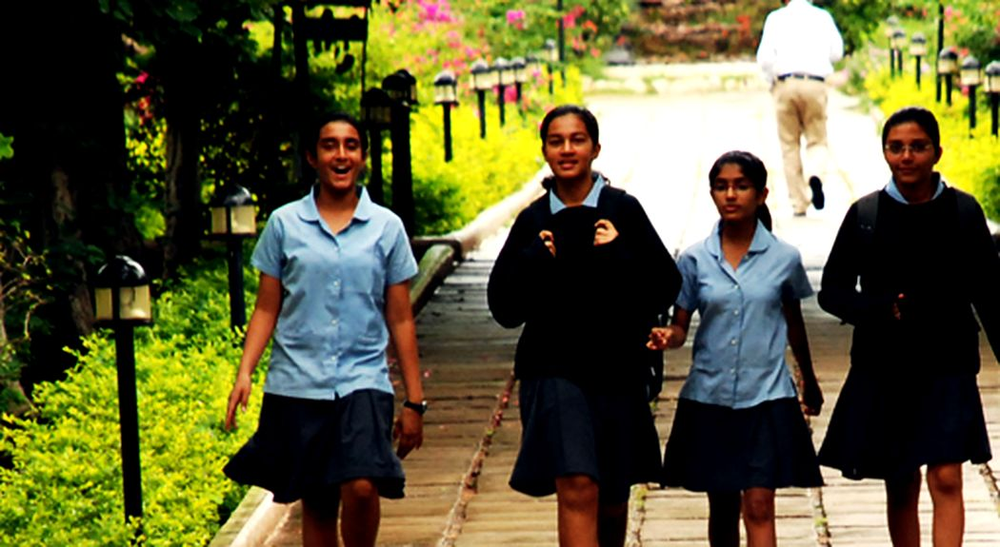

Swaroopananda to be supplied
Swami Swaroopananda
Chairman
[A short introduction to Swami Swaroopananda to be supplied by the school.]
Siruvani, Coimbatore · Grades V–XII

The official CIRS film
A short film walking the campus, the classrooms and the boarding houses through the eyes of the students who live here — the clearest look at CIRS before you visit in person.
 YouTube
The Official CIRS Film · watch on YouTube
YouTube
The Official CIRS Film · watch on YouTube

Watch a storm and you feel its power before you understand it. At the centre sits a still, low-pressure eye, and wrapped around that stillness, a system of massive cloud and wind moving with tremendous force.
Study the mechanics and a strange truth emerges: the higher the pressure in the eye, the calmer it stays — and the calmer that eye, the more violent and far-reaching the winds around it become. Stillness at the centre is what generates power at the edges.
The same law governs us. A calm mind is not a passive mind — it is the source of our force in the world. To keep that calm, we cannot let success inflate us or failure crush us. Both are just weather — they pass through every life and mean nothing about who we are underneath. Our task is to keep returning inward, to steady the centre, and let that stillness generate the power to act, to build, to move mountains outside us.
The eye of the storm is not where nothing happens. It’s where everything begins.
Storm to perform.
Rajeshwari Satish · PRINCIPAL, CIRS
A community of knowledge, service and skill
Set in the Siruvani foothills outside Coimbatore, on a hundred-acre campus with eighty acres left to forest, CIRS has offered CBSE and the IB Diploma side by side since 1996, each taught by teachers trained in that curriculum — shaping boarders from twenty-four Indian states and twenty countries into disciplined, compassionate learners.
“The future of our world rests upon the quality of its youth. Quality comes through care and attention.”
Chinmaya International Residential School was founded on 6 June 1996 by Swami Chinmayananda, opening with ninety-six students. It is an undertaking of the Central Chinmaya Mission Trust, and the motto above is taught as a daily practice rather than displayed as a crest.
Roughly eighty of the campus’s hundred acres have been left to native flora and fauna — a decision that cost the school buildable land and earned it the Green School Award from the Centre for Science and Environment, New Delhi.
Boarding is the part of the education that is not timetabled. Houses carry the names of India’s great teachers, and seniors and juniors share corridors by design, so mentoring is structural rather than extracurricular.
Governance
CIRS is an undertaking of the Central Chinmaya Mission Trust (CCMT), Mumbai, and is managed by its Board of Directors.
Chairman
[A short introduction to Swami Swaroopananda to be supplied by the school.]

Resident Director
[A short introduction to Swami Anukoolananda to be supplied by the school.]
Director
[A short introduction to Shri. Viju Mahtaney to be supplied by the school.]
Director
[A short introduction to Shri Jadgish Moorjani to be supplied by the school.]
Director
[A short introduction to Shri. Siddharth Balachandran to be supplied by the school.]
Director
[A short introduction to Shri. Ram Buxani to be supplied by the school.]

Director — Academics & Administration
[A short introduction to Smt. Shanti Krishnamurthy to be supplied by the school.]

Principal
[A short introduction to Smt. G. Rajeshwari to be supplied by the school.]


Why CIRS
Discover the difference
Boarders arrive from twenty-four Indian states and twenty countries and share a single dining hall, a single timetable and a single set of house rosters. Difference is not a programme here — it is the corridor.
Junior School
Build a bright beginning
The junior years at CIRS begin in Grade V, introducing boarding life, house mentorship, and a broad first exposure to music, sport and the sciences alongside the CBSE curriculum. Value education runs alongside the timetable from Bal Bhagavatam onward.
[Placeholder — junior-school-specific programme detail to be supplied by the school.]
Senior School
Choose your pathway
From Grade XI, CIRS students declare a direction — CBSE’s Engineering, Medicine or Management streams, or the IB Diploma, where every teacher is IB-trained and several serve as IB examiners.
The Diploma runs across six subject groups, three or four of them at Higher Level, anchored by the Extended Essay, Theory of Knowledge and CAS — recognised by universities in India and worldwide.
Academics
Student-centred learning
Families choose the pathway, not the school. CBSE classrooms are led by subject teachers for the national board; IB classrooms by teachers who are IB-trained, several of them serving as IB examiners — value- and culture-based education delivered with current methodology and technology, whichever curriculum a student takes.
Affiliated to the CBSE, New Delhi, with board examinations at Grades X and XII and English as the medium throughout. Senior students choose between Engineering, Medicine and Management streams.

CIRS was the seventh school in India authorised by the International Baccalaureate. The two-year Diploma spans six subject groups — three or four at Higher Level — built around the Extended Essay, Theory of Knowledge and CAS. Every IB teacher is IB-trained, several serve as examiners for the programme, and university counselling continues through Naviance from Grade X.
Value education runs across every grade alongside the academic timetable, from Bal Bhagavatam in the lower school to selected portions of the Bhagavad Geeta in the senior years.
ज्ञानं सेवा च कौशलम्
Jñānaṁ sevā ca kauśalam
Knowledge · Service · Skill
Student life
Live, learn, belong
Houses carry the names of India’s great teachers. Seniors and juniors share corridors by design, prep ends at nine, and the closing chant carries across the valley for six hundred boarders at once.
School life
A boarding school is a schedule. Scroll through the one the whole campus keeps.
05:3005:3021:00
The campus
Classrooms, houses, playing fields and the dining hall sit inside one walkable boundary. The rest of the site was left alone.
Laboratories, seminar rooms and both boards’ classrooms in one building.
Reference, reading and the university-counselling desk together.
Residential houses named for the great sages of India.
Athletics track, courts, swimming pool and the yoga shala.
Built into the slope, with the valley as the back wall of the stage.
A vegetarian kitchen serving the whole residential community.
Athletics
Compete, play, grow
Athletics, football, cricket, basketball, swimming and yoga fill the four o’clock hour every day. Eighty of the campus’s hundred acres are left wild, so the edge of play is the edge of the Western Ghats.
[Placeholder — teams, fixtures and results to be supplied by the sports office.]
Arts
Express, perform, create
A veena class ends as a band sets up; a Bharatanatyam rehearsal shares the wing with a drama read-through most evenings at six. Both traditions — Indian classical and contemporary — are native here, not imported.
[Placeholder — ensembles, productions and showcase dates to be supplied.]
The record
school in India authorised by the International Baccalaureate, Geneva — which is why the Diploma here is older than most of the students taking it.
acres in the Siruvani foothills, of which roughly eighty are left to native forest, recognised by the Green School Award.
Indian states, and twenty countries, in one dining hall. A Grade IX corridor here holds more of India than most Indian cities.
students today, from an opening roll of ninety-six in 1996. The morning chant has not changed.
Board-result percentages, university-placement counts and scholarship totals belong in this section and come from the examinations office each August. They are left out of this prototype rather than estimated.
After CIRS
The IB opens direct application to North America, the UK, Europe and Australia; CBSE keeps the Indian national pathway fully open. Counselling begins in Grade X.
Destination cities are sample plotting for this prototype, positioned from real coordinates. The production chart should read from the school’s verified alumni placement register.
Admissions 2027–28
Registration is open year-round for the academic year beginning in April. Registration alone does not confer a right to admission.
Complete the online application. Enter the student’s name exactly as it appears on the birth certificate, a current address, a working email address, and your chosen entrance-examination centre. Examination details are sent by email.
Held on the second Sunday of every month. Grades V–VI write English and Mathematics over two hours; Grades VII–IX add Science across three. Every paper, at every level, includes a creative-writing section.
Grade XI applicants declare a direction. CBSE candidates write Physics and Chemistry with Mathematics for Engineering, with Biology for Medicine, or Management Studies with Mathematics. IB candidates write four 45-minute papers: English, Mathematics, Science and General Awareness.
Visits run on Wednesdays and Saturdays between 10:00 and 11:00 IST, by prior appointment only. A boarding decision made without walking the site is a decision made on photographs.
Offers follow the entrance result and the interaction. Caste certificates are submitted at this stage where applicable. The place is confirmed once the fee schedule is settled.